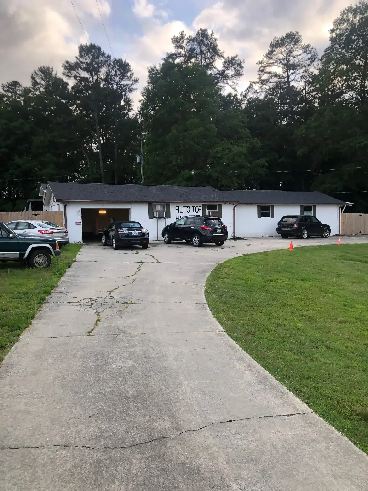
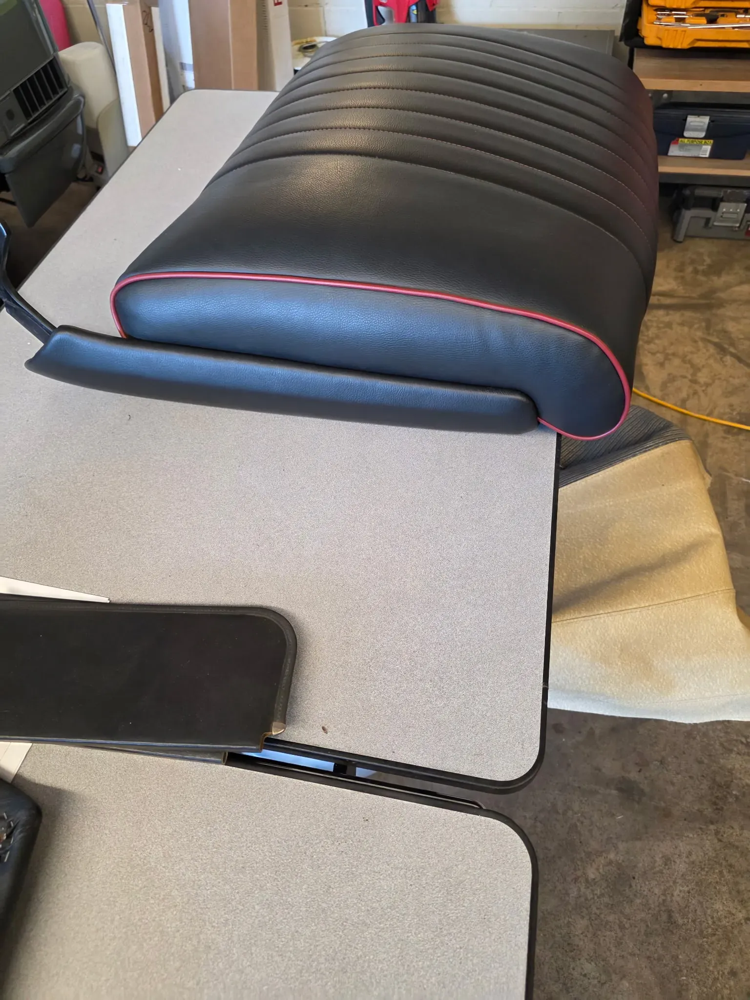
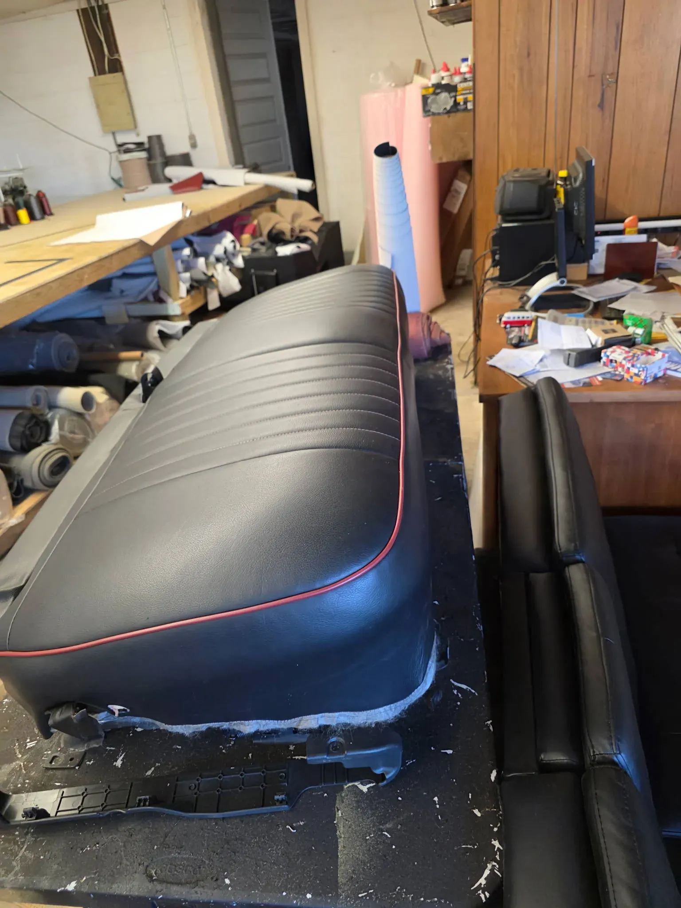
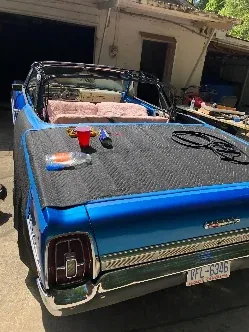

Trimming interiors in Monroe since 1989
What began as a focused automotive upholstery shop grew into a multi-disciplinary interior restoration business — cars, boats, aircraft and bikes.

A trade you learn by doing
Upholstery is not a job you can rush or fake. A top fitted over collapsed pads will never sit right. Foam that is wrong for a boat will hold water against the cushion. Knowing the difference is what over three decades buys you.
That is also why we quote in person. A photograph cannot show a bent bow or a rusted seat frame, and a number given without seeing those is not a real number.
How the work gets done



Four trades, one roof, since 1989
Cars, boats, aircraft and bikes are four different crafts. Most shops pick one. We kept all four in the same building in Monroe.
If it has a seat, a top or a panel, bring it
Convertible tops
Vinyl and canvas, heated glass and plastic windows, and the frame and pad work underneath that most quotes leave out.
Convertible topsSeats, headliners and interiors
One torn seat or a complete classic interior built to your spec, for daily drivers, trucks and show cars alike.
Auto upholsteryBoats
Seating, helm trim, cushions and canvas in materials chosen for sun, standing water and salt.
Marine upholsteryAircraft
Cockpit and cabin interiors, seating, side panels and carpet — a trade almost nobody else in the region offers.
Aviation upholsteryThirty-seven years of this, in their words
★★★★★5 out of 5
5 days agoI had Auto Tops and Trim replace the headliner and center console leather in my 2008 Honda Accord. I was very happy with the quality of the work and would recommend using them.
★★★★★5 out of 5
8 months agoMr. Hopton restored my sunroof shade back to new condition. He even allowed me to watch the process. I recommend him 100% for all of your reupholstery needs. Thank you!
★★★★★5 out of 5
11 months agoExcellent work. We drove an hour to get our sunroof fixed and we were very happy with the service. Highly recommend!
★★★★★5 out of 5
a month agoFantastic service. The job was done quickly, while I waited. The price was cheaper than what most people were charging here locally.
★★★★★5 out of 5
a month agoExcellent service and great prices I'll take back my car all the time
★★★★★5 out of 5
6 months agoGreat auto shop
★★★★★5 out of 5
a year agoGood work
★★★★★5 out of 5
5 days agoI had Auto Tops and Trim replace the headliner and center console leather in my 2008 Honda Accord. I was very happy with the quality of the work and would recommend using them.
★★★★★5 out of 5
8 months agoMr. Hopton restored my sunroof shade back to new condition. He even allowed me to watch the process. I recommend him 100% for all of your reupholstery needs. Thank you!
★★★★★5 out of 5
11 months agoExcellent work. We drove an hour to get our sunroof fixed and we were very happy with the service. Highly recommend!
★★★★★5 out of 5
a month agoFantastic service. The job was done quickly, while I waited. The price was cheaper than what most people were charging here locally.
★★★★★5 out of 5
a month agoExcellent service and great prices I'll take back my car all the time
★★★★★5 out of 5
6 months agoGreat auto shop
★★★★★5 out of 5
a year agoGood work
Ready to transform your interior?
Bring new life to your seats, tops, and trim with work built for comfort, durability, and long-term pride of ownership.
Free estimates · In-person quotes · Monroe, NC since 1989